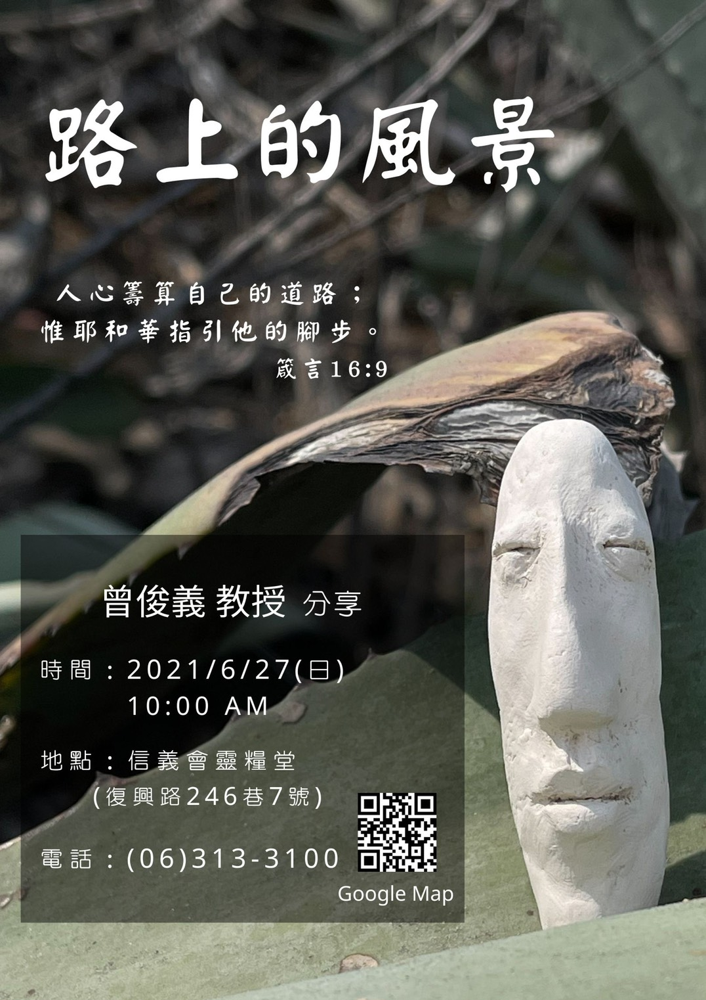

基督教臺灣信義會
靈糧堂 週報


1. 因疫情的關係，目前教會仍採線上敬拜聚會，(無實體聚會)故需要區長，小組長幫忙登記參與線上敬拜人數，請登記後盡快回報李教師或直接填寫google表單登記. . 另外, 因疫情關係，有提供教會郵局匯款(00310840277957)或來教會投奉獻箱兩種奉獻方式，奉獻完也請填google 表單，願神祝福甘心樂意奉獻之人。
2. 目前六十週年奉獻為十六萬八千八百元，目標三十萬，請弟兄姊妹繼續為此奉獻。六十週年紀念衫和紀念冊已到貨並可領取，在教會上班的時間來領取，但要先預約，紀念冊是一家一本。還有，已訂購超過一件紀念衫者，每件需付250元。
3. 教會目前由推動導讀 神的話，希望神的話語能化為我們個人的禱告，有需要的弟兄姊妹可以詢問區長或小組長。
4. 下週主日6/27(日)為福音主日，特邀臺南應用科技大學美術系曾俊義教授分享「路上的風景」，請弟兄姊妹廣為宣傳，藉由線上聚會將福音的好消息傳出去。
5. 7月份活潑的生命已在教會，有訂閱者請在教會上班時間(早上九點到下午五點，星期二到星期六，加主日時間)領取。
6. 目前來教會者，仍需實名制登記。
星期 |
時間 |
聚會名稱 |
|---|---|---|
主日 |
上午10點00分 |
主日崇拜、兒童主日學 |
主日 |
下午12點30分 |
長青小組、以勒小組、約書亞小組、保羅小組 佳美小組、盛愛小組、帝寶小組 |
週三 |
晚上08點00分 |
美女小組 |
週四 |
早上09點30分 |
良善小組 |
週四 |
晚上07點15分 |
喜樂小組 |
週四 |
晚上08點00分 |
凡恩小組 |
週五 |
晚上07點30分 |
牛棚小組、得勝小組、百合小組 |
週五 |
晚上08點00分 |
1+7小組 |